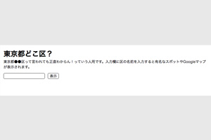
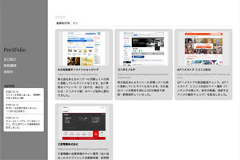
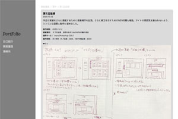

<!DOCTYPE html>
<html lang="en" dir="ltr">
  <head>
    <meta charset="utf-8">
    <meta name="viewport" content="width=device-width,intial-scale=1.0">
    <title>Port Folio_TOP</title>
    <link rel="stylesheet" href="css/ress.css">
    <link rel="stylesheet" href="css/style.css">
    <link rel="stylesheet" href="css/tab.css">
    <link rel="stylesheet" href="css/news.css">
    <link href="https://fonts.googleapis.com/css2?family=Lora:ital,wght@1,500&display=swap" rel="stylesheet">
    <script src="https://ajax.googleapis.com/ajax/libs/jquery/3.4.1/jquery.min.js"></script>
  </head>
  <body>
    <div id="top" class="allWraper clearfix">
      <header class="equal-height">
        <div class="headerContents">
          <h1><a href="index.html">PortFolio</a></h1>
          <nav>
            <ul>
              <li><a href ="profile.html">自己紹介</a></li>
              <li><a href ="index.html">業務履歴</a></li>
              <li><a href ="address.html">連絡先</a></li>
            </ul>
          </nav>

          <div class="newsBox">
            <p class="title">NEWS</p>
            <div class="scrollWrap">
              <div class="sp_inner">
              <div class="inner">
                <dl>
                  <dt>2020.10.10</dt>
                  <dd>カテゴリを増設しました。（業務制作物と習作に分離）</dd>
                </dl>
                <dl>
                  <dt>2020.10.13</dt>
                  <dd>習作に１点成果を追加しました。（10月10日更新分）</dd>
                </dl>
                <dl>
                  <dt>2020.10.14</dt>
                  <dd>タイトルにトップページへ戻るリンクと、PCとSPでリンク遷移場所を変更しました。</dd>
                </dl>
              </div>
            </div>
            </div>
            <!--newsBoxEnd-->
          </div>
        </div>
      </header>
      <div class="sectionContainer equal-height">
        <ul class="pankuzuList">
          <li>業務履歴</li>
          <li class="current"></li>
        </ul>
        <ul class="tablist">
          <li><a class="tab_btn is-active-btn"  href="#tab01">業務制作物</a></li>
          <li><a class="tab_btn" href="#tab02">習作</a></li>
          <li><a class="tab_btn" href="#tab03">スクールでの制作物</a></li>
        </ul>
        <div id="tab01" class="tab_item is-active-item">
          <section>
          <article>
            <div class="contents">
              <figure>
                <a class="changeWin" href="work/work01.html" target="_blank"></a>
              </figure>
              <figcaption>
                <h2 class="subTitle"><b>大丸松坂屋オンラインショッピング</b></h2>
                <p class="urlAddress"><a href="https://www.daimaru-matsuzakaya.jp/" target="_blank">https://www.daimaru-matsuzakaya.jp/</a></p>
                <p>株式会社あとらす二十一に所属していた時に更新していたサイトになります。主に季節のイベントページ（お中元・母の日・父の日・クリスマス等）のページ制作に携わりました。</p>
              </figcaption>
            </div>
          </article>
          <article>
            <div class="contents">
              <figure>
                <a class="changeWin" href="work/work02.html" target="_blank"></a>
              </figure>
              <figcaption>
                <h2 class="subTitle"><b>コニカミノルタ</b></h2>
                <p class="urlAddress"><a href="https://www.konicaminolta.jp/business/products/index.html" target="_blank">https://www.konicaminolta.jp/business/products/index.html</a></p>
                <p>株式会社あとらす二十一に所属していた時に更新していたサイトになります。主に製品ページの更新を週に2,3回の頻度で更新・新規制作していました。</p>
              </figcaption>
            </div>
          </article>
          <article>
            <div class="contents">
              <figure>
                <a class="changeWin" href="work/work03.html" target="_blank"></a>
              </figure>
              <figcaption>
                <h2 class="subTitle"><b>dアニメストア ニコニコ支店</b></h2>
                <p class="urlAddress"><a href="https://site.nicovideo.jp/danime/?ref=nicotop_danime" target="_blank">https://site.nicovideo.jp/danime/?ref=nicotop_danime</a></p>
                <p>dアニメストアの配信動画チェック、dアニメストア ニコニコ支店のサイト運用（ランキングの修正や、新作の掲載、放映するアニメの動作チェック）を担当しました。</p>
              </figcaption>
            </div>
          </article>
          <article>
            <div class="contents">
              <figure>
                <a class="changeWin" href="work/work04.html" target="_blank"></a>
              </figure>
              <figcaption>
                <h2 class="subTitle"><b>三菱電機株式会社</b></h2>
                <p class="urlAddress"><a href="https://www.mitsubishielectric.co.jp/corporate/" target="_blank">https://www.mitsubishielectric.co.jp/corporate/</a></p>
                <p>三菱電機の企業情報のサイト運用（主に担当したカテゴリとして投資家情報・研究開発の更新、他全般的に）を担当しました。</p>
              </figcaption>
            </div>
          </article>
        </section>
            <!--tab01End-->
            </div>
        <div id="tab02" class="tab_item">
          <section>
            <article>
              <div class="contents">
                <figure>
                  <a class="changeWin" href="work/work08.html" target="_blank"></a>
                </figure>
                <figcaption>
                  <h2 class="subTitle"><b>東京都23区検索</b></h2>
                  <p class="urlAddress">2020.11.19</p>
                  <p>自主練として制作。東京都の区についていまいちどういうところかわからなかった為作りました。</p>
                </figcaption>
              </div>
            </article>
            <article>
              <div class="contents">
                <figure>
                  <a class="changeWin" href="work/work07.html" target="_blank"></a>
                </figure>
                <figcaption>
                  <h2 class="subTitle"><b>第3回改修</b></h2>
                  <p class="urlAddress">2020.10.21</p>
                  <p>ニュース欄を改修しました。</p>
                </figcaption>
              </div>
            </article>
            <article>
              <div class="contents">
                <figure>
                  <a class="changeWin" href="work/work06.html" target="_blank"></a>
                </figure>
                <figcaption>
                  <h2 class="subTitle"><b>第2回改修</b></h2>
                  <p class="urlAddress">2020.10.14</p>
                  <p>使い勝手をあげるために細微を修正しました。</p>
                </figcaption>
              </div>
            </article>
            <article>
              <div class="contents">
                <figure>
                  <a class="changeWin" href="work/work05.html" target="_blank"></a>
                </figure>
                <figcaption>
                  <h2 class="subTitle"><b>第1回改修</b></h2>
                  <p class="urlAddress">2020.10.12</p>
                  <p>作品や実績をさらに掲載するために掲載場所を拡張。さらに修正を示すためのNEWS欄も増設。サイトの雰囲気を損なわないよう、シンプルな設置と動作に留めました。</p>
                </figcaption>
              </div>
            </article>
        </section>
        <!--tab02End-->
      </div>
      <div id="tab03" class="tab_item">
        <section>
        <!--<article>
          <div class="contents">
            <figure>
              <a class="changeWin" href="work/work08.html" target="_blank"></a>
            </figure>
            <figcaption>
              <h2 class="subTitle"><b>HTML5 &frasl; CSS3課題</b></h2>
              <p class="urlAddress">2020.11.11</p>
              <p>Code Camp様の課題で制作。HTML5,CSS3を使用して制作しました。</p>
            </figcaption>
          </div>
        </article>-->
      </section>
        <!--tab03End-->
      </div>
      <!--sectionContainerEnd-->
      </div>
      <div class="pagetop">
        <p><a href="#pagetop">ページトップへ戻る</a></p>
      </div>
      <footer>
        <p>&copy;PortFolio</p>
      </footer>
      <!-- allWraperEnd-->
    </div>
  </body>
  <script type="text/javascript" src="js/base.js"></script>
  <script type="text/javascript">
    //タブ切り替え
    $(function() {
      $('.tab_btn').on('click', function() {
        $('.tab_item').removeClass("is-active-item");
        $($(this).attr("href")).addClass("is-active-item");
        $('.tab_btn').removeClass('is-active-btn');
        $(this).addClass('is-active-btn');
      });
    });

    //News回転
    document.querySelectorAll('.before').forEach(elm => {
	     elm.onclick = function () {
		       let div = this.parentNode.querySelector('.scrollWrap .inner');
		         div.scrollLeft -= (div.clientWidth);
	          };
    });
    document.querySelectorAll('.after').forEach(elm => {
	     elm.onclick = function () {
		       let div = this.parentNode.querySelector('.scrollWrap .inner');
		         div.scrollLeft += (div.clientWidth);
	          };
    });
  </script>
</html>
